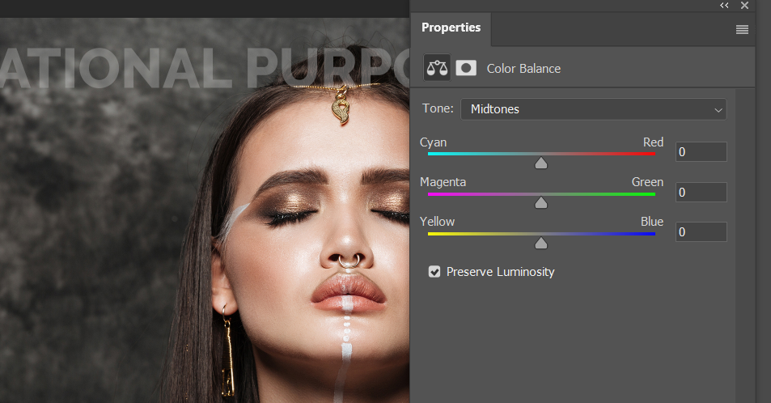

2019年12月
图层元素显示更加清晰 in Photoshop
当一个设计使用了很多图层时，一个好的方法是对图层进行合理命名，这样可以方便的找到需要调整的图层，但很多时候我们对图层命名上做的不够。
在 Photoshop 2020 中，我们可以通过对图层进行设置，使当前图层代表的元素能够清晰地呈现出来。
图片转换为漫画效果 in Photoshop
Blend Mode 混合模式 in Photoshop

color balance in Photoshop
color balance 在 Photoshop 中长用于调整图片的 高光/中间调/阴影 部分的色彩。它的功能可以用曲线实现，但是使用更加方便。
新建 color balance 图层：
